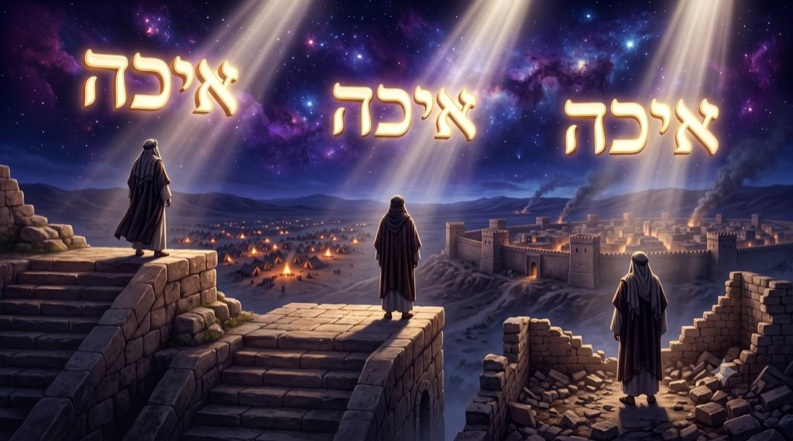
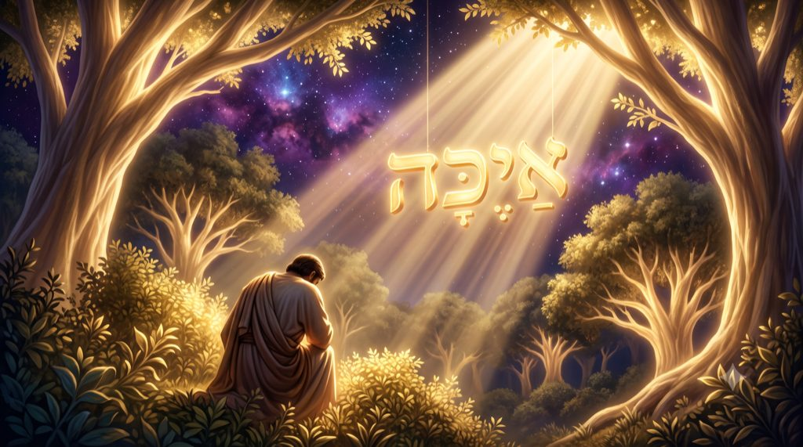
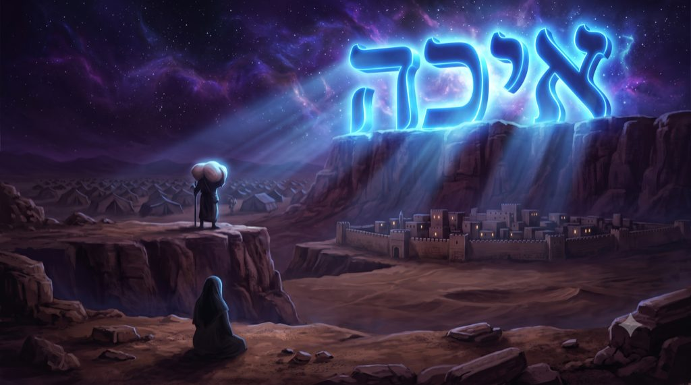
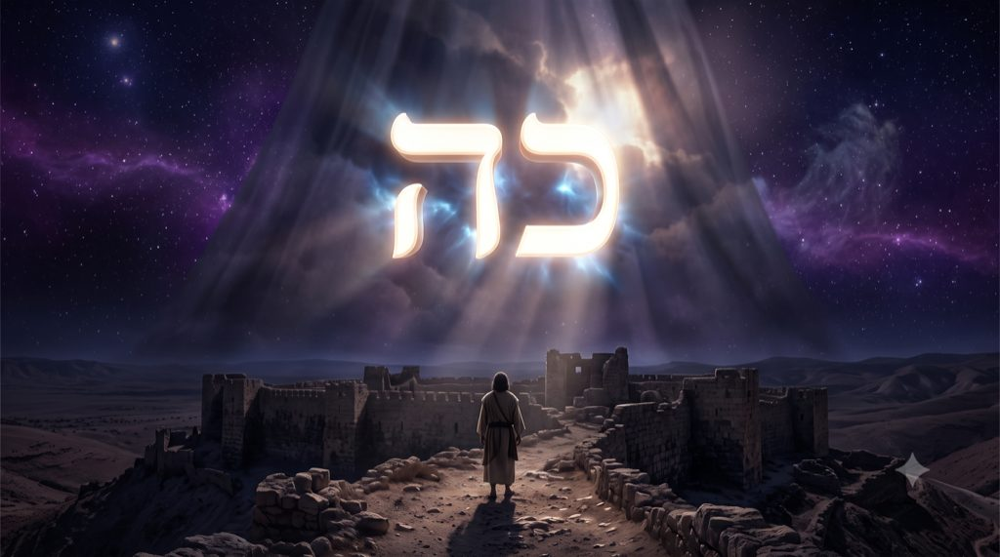
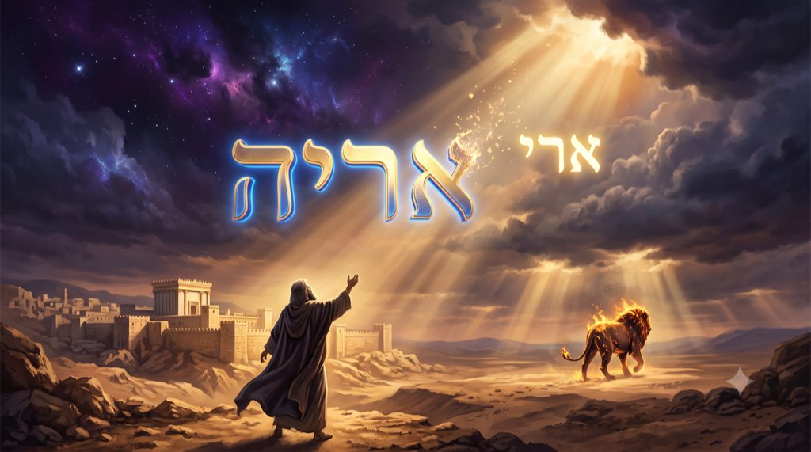
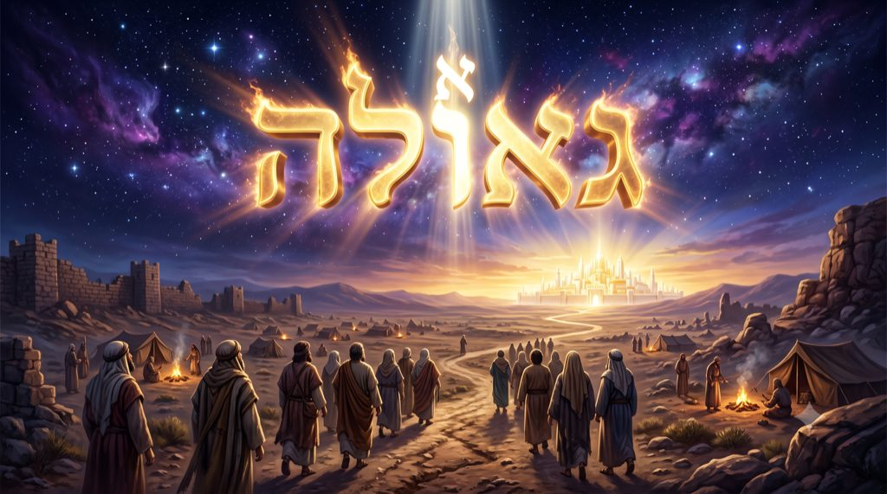

Ei’ha איכה – Comment ?
Pourquoi le même mot Eih'a, le « comment » de la sidération face à la catastrophe, ouvre en ce Chabbat 'Hazon la paracha, la haftara et le livre des Lamentations, qui sera lue à Ticha béav, comment ce mot s'écrit avec les quatre lettres exactes du premier appel adressé à l'homme en Éden, et pourquoi l'aleph, que la tradition associe au Maître du monde, reste en tête du mot.
La paracha de Devarim ouvre le dernier livre de la Torah. Moché se tient dans les plaines de Moav, face au Jourdain, et commence le grand discours d'adieu qui occupera le livre entier de Devarim. La tradition nomme ce livre Michné Torah, la « répétition de la Torah », car Moché y reprend, à quelques semaines de sa mort, quarante années de chemin avec ses propres mots. Dès les premiers versets, une exclamation, qui sonne comme un reproche surgit :
« אֵיכָה אֶשָּׂא לְבַדִּי טׇרְחֲכֶם וּמַשַּׂאֲכֶם וְרִיבְכֶם » (Devarim 1:12), « comment porterais-je seul votre charge, votre fardeau et vos querelles ? ». Le mot qui ouvre cette phrase, EI’HA, « comment », a l'air d'un mot commun. La semaine où nous le lisons lui donne pourtant un poids particulier.

Car ce Chabbat n'est pas un Chabbat ordinaire. C'est Chabbat 'Hazon, le Chabbat « de la vision », le dernier avant Ticha BeAv, le 9 Av, jour de la destruction des deux Temples. Lors de la haftara, la lecture des prophètes de ce Chabbat, nous lisons la vision de Yechayahou, et le prophète y reprend le même mot pour pleurer Jérusalem de son vivant : « אֵיכָה הָיְתָה לְזוֹנָה קִרְיָה נֶאֱמָנָה » (Yechayahou 1:21), « comment est-elle devenue dépravée, la cité fidèle ? ». Et dans quelques jours, assis à terre à la lumière des bougies de Ticha Béa’v, nous ouvrirons le livre des Lamentations, qui porte ce mot pour titre : « אֵיכָה יָשְׁבָה בָדָד הָעִיר רַבָּתִי עָם » (EI’HA 1:1), « comment est-elle assise solitaire, la ville si peuplée ? ». Trois textes de la même semaine, trois époques, trois auteurs, et le même mot qui annonce son leimotiv. La liturgie le souligne : dans de nombreuses communautés, le verset de Moché et celui de la haftara se chantent ce Chabbat sur la cantilène de EI’HA, et la synagogue entend la même note qui sonne comme une complainte revenir trois fois.
Le Midrach a évidemment soulevé cette rencontre : « שְׁלשָׁה נִתְנַבְּאוּ בְּלָשׁוֹן אֵיכָה, משֶׁה, יְשַׁעְיָה, וְיִרְמְיָה » (EI’HA Rabba 1:1), « trois ont prophétisé en langue de EI’HA : Moché, Yechayahou et Yirmeyahou». Rabbi Lévi, dans le même passage, en donne la parabole. Une matrone avait trois garçons d'honneur : l'un l'avait connue dans sa gloire, l'autre l'avait vue dans sa frivolité, le dernier l'a regardée dans sa déchéance. De même, Moché a vu Israël dans son honneur et a dit « comment porterais-je seul » ; Yechayahou l'a vu dans sa dissipation et a dit « comment est-elle devenue dépravée » ; Yirmeyahou l'a vu dans son avilissement et a dit « comment est-elle assise solitaire ». Un seul peuple traverse trois âges de son histoire, et à chaque âge le même mot revient : “Comment ?”
Le Midrach pèse ensuite le mot lui-même, et nomme ce calcul “minyan EI’HA”, « le compte de EI’HA ». Ben Azaï y enseigne qu'Israël n'est parti en exil qu'après avoir renié quatre choses, une par lettre : le D.ieu Unique du monde, que porte l'aleph ; les dix paroles du Sinaï, que porte le youd, dix ; la circoncision donnée après vingt générations, que porte le khaf, vingt ; et les cinq livres de la Torah, que porte le hé, cinq. Soit les lettres et le compte du mot אֵיכָה. Rabbi Lévi, lui, y compte les trente-six causes de Karets, les retranchements dont la Torah menace les fautes les plus graves. Chacune des quatre lettres renvoie ainsi à un lien rompu, et ces trente-six se logent dans le mot que la semaine de 'Hazon nous fait lire trois fois.
L’anomalie reste néanmoins double. Pourquoi la Torah place-t-elle dans la bouche de Moché, plusieurs siècles avant la moindre ruine, le mot exact des Lamentations ? Et pourquoi le calendrier veut-il que ce mot revienne trois fois la semaine dite « de la vision » ? On sent bien qu’iIl y a dans ce mot davantage qu'une tournure interrogative. Un tel « comment » n'attend pas seulement une explication : il mesure l'écart entre ce qui devait être et ce qui est. Il faut donc examiner le mot lettre après lettre, et remonter d'abord jusqu'à la première question que le monde ait entendue.
Avec l'aide du Ciel et de nos maîtres, nous verrons comment le mot EI’HA s'écrit avec les quatre lettres exactes du premier appel adressé à l'homme au jardin d'Éden, comment les trois « comment » de cette semaine descendent trois étages d'une même solitude, ce que le Zohar 'Hadach lit dans EI’HA comme une question sur les manifestations de la Présence, pourquoi l'aleph reste en tête du mot, comment la question, mieux entendue, adoucit les rigueurs qu'elle porte, et quelle vision ce Chabbat 'Hazon place au-dessus des ruines.
• De Ayéka à Eih’a
• Les trois solitudes du Ei’ha
• « Où est Koh ? », le secret de Ei’ha
• Adoucir les rigueurs : le Ei’ha entendue comme appel
• 'Hazon, la vision au-dessus des ruines de Ei’ha
• Que le Aleph de Ei’ha rentre dans l'exil
Pour trouver la racine du mot, il faut remonter à la première question de l'histoire. Le jardin d'Éden vient de connaître la faute. L'homme a mangé du fruit interdit, ses yeux se sont ouverts, et il s'est caché parmi les arbres. Une voix traverse alors le jardin : « וַיִּקְרָא ה' אֱלֹהִים אֶל־הָאָדָם וַיֹּאמֶר לוֹ אַיֶּכָּה » (Beréchit 3:9), « et youd-hé-vav-hé Elokim appela l'homme, et Il lui dit : Ayéka, où es-tu ? ». La première parole que D.ieu adresse à l'homme après la faute est une question de quatre lettres.

Rachi pose la question évidente : Celui qui remplit les mondes ignorerait-Il où se cache Sa créature ? Il savait où était l'homme, répond Rachi, mais Il a questionné pour entrer en discussions avec lui, afin de ne pas l'effrayer au point de le rendre incapable de répondre. La question ouvre une porte : D.ieu sait, et Il interroge l’homme quand même, pour laisser au fautif le moyen de revenir de lui-même. Un père qui sait dans quelle pièce son enfant s'est enfermé frappe pourtant à la porte et demande où il est. Rachi retrouve le même procédé quand D.ieu demande à Kayin « où est Hevel ton frère ? » : entrer en discussions, c’est laisser à l'homme une chance d'avouer, car le Ciel respecte, la liberté humaine, jusqu’à la faute.
Regardons maintenant les lettres. Ayéka, « où es-tu ? », s'écrit aleph, youd, kaf, hé : אַיֶּכָּה. Eika, « comment ? », s'écrit aleph, youd, h’af, hé : אֵיכָה. Les deux mots sont faits des quatre mêmes lettres ; seule la vocalisation, absente du rouleau, les distingue. Qui lirait la Torah sans les voyelles ne pourrait pas trancher si le jardin d'Éden dit « où es-tu ? » ou déjà le même « comment ? » de la sidération. Dans le rouleau de la Torah comme dans celui des Lamentations, les quatre consonnes se suivent à l'identique, et la différence entre l'appel et la plainte n'existe que dans la bouche du lecteur. Nos maîtres n'y ont pas vu un hasard.
Deux sources midrachiques portent la même lecture. Rabbi Abahou l'enseigne dans la quatrième pétih'ta, l'ouverture, de EI’HA Rabba, et Beréchit Rabba 19 le formule sur la faute d'Adam : « וְקוֹנַנְתִּי עָלָיו אֵיכָה, שֶׁנֶּאֱמַר וַיֹּאמֶר לוֹ אַיֶּכָּה, אֵיכָה כְּתִיב », « Je me suis lamenté sur lui : Ei’ha, comme il est dit : Il lui dit Ayéka “où est tu”, et c'est Ei’ha qui est écrit ». D.ieu appelle l'homme déchu, et dans cet appel, disent les maîtres, une lamentation est déjà contenue. Le premier « où es-tu ? » portait, dans ses consonnes, le futur « comment ? » des ruines. Avant qu'aucun Temple ne soit bâti, les lettres du deuil étaient déjà écrites, dans une question.
Si le premier appel portait déjà la lamentation, la lamentation porte encore l'appel : quand Israël, assis à terre le soir du 9 Av, lira « comment est-elle assise solitaire », les consonnes du rouleau diront toujours, pour qui sait entendre, « où es-tu ? ». L'exil n'a pas forgé son vocabulaire, il a hérité des lettres du Éden, et l'histoire des ruines de Jerusalem reprend une conversation interrompue, celle d'un D.ieu qui “cherche” et d'un homme qui se cache, qui s’exil.
Le mot des ruines et le premier appel de D.ieu à l'homme s'écrivent avec les quatre mêmes lettres : sous chaque « comment ? » de l'histoire, la même question demande « où es-tu ? ».
Reprenons nos trois versets, cette fois dans l'ordre, car ils forment une gradation. Moché d'abord : « אֵיכָה אֶשָּׂא לְבַדִּי », « comment porterais-je seul ». Le mot décisif est levadi, « seul ». Moché ne dénonce ni le peuple ni la route : il décrit une solitude. Il se tient au milieu d'un peuple de six cent mille hommes, et c'est là, entouré de toutes parts, qu'il prononce ce mot.

Cette solitude est celle de la charge du Maître. « Votre charge, votre fardeau et vos querelles » : Moché décrit un homme sur qui tout repose, les jugements, les plaintes, les disputes de campement, le poids quotidien d'une nation en marche. Quiconque a exercé une responsabilité réelle connaît cette solitude : un père devant les soucis des siens, un médecin de garde, une mère qui tient une maison à bout de bras. On peut être aimé et entouré, et porter pourtant ce que personne ne peut porter à notre place. Le Midrach le précise : Moché a vu Israël « dans sa gloire », et c'est au sommet, devant un peuple nombreux et comblé, que la plainte lui échappe. En réalité, plus ce que l'on porte est précieux, plus on le porte seul.
Yechayahou descend d'un étage. « אֵיכָה הָיְתָה לְזוֹנָה קִרְיָה נֶאֱמָנָה », « comment est-elle devenue dépravée, la cité fidèle ? ». Le prophète regarde une ville encore debout, pleine de monde et de commerce, et il y voit l’alliance avec le divin brisée. La cité où résidait la justice a vidé ses propres mots de leur sens, et le prophète emploie le terme le plus dur de la langue hebraique pour signifier cette rupture de l’alliance. La ville de Yechayahou, encore peuplée, s'est vidée de sa vérité, et c'est ainsi qu'elle s'est rendue seule. Un être peut trahir ce qu'il est tout en restant entouré : il s'installe alors dans une solitude inconsolable.
Puis vient Yirmeyahou, l'étage le plus bas. « אֵיכָה יָשְׁבָה בָדָד הָעִיר רַבָּתִי עָם », « comment est-elle assise solitaire, la ville si peuplée ? ». Ici la solitude a pris corps. Badad, « solitaire », est dans la Torah le mot du lépreux que l'on fait asseoir hors du camp. La ville n'a plus ni rois, ni prêtres, ni de fidèles ; elle est à terre, comme une endeuillée au premier soir. Le premier chapitre des Lamentations la montre en larmes dans la nuit, sans personne pour la consoler.
Trois destinataires se sont ainsi succédé : l'homme, chez Moché, seul sous la charge ; le peuple, chez Yechayahou, seul dans sa trahison ; la ville, chez Yirmeyahou, seule dans sa ruine. Trois étages d'une même descente, et la même question à chaque palier “Comment ?”
Les trois solitudes s'appellent l'une l'autre : la charge du berger annonçait la fêlure du peuple, et la fêlure du peuple préparait la ruine de la ville. Le Midrach, en réunissant les trois prophètes « en langue de EI’HA », trace une trajectoire unique, du premier soupir de Moché jusqu'aux pierres noircies. Mais que s'est-il retiré, d'étage en étage ? Qu'ont perdu l'homme, puis le peuple, puis la ville, pour que la même syllabe passe du soupir d'un chef à la plainte d’un peuple? Pour répondre, il faut ouvrir le mot lui-même, et c'est la mystique qui en donne la clé.
De Moché à Yechayahou et de Yechayahou à Yirmeyahou, la même question descend trois étages, l'homme, le peuple, la ville, et creuse à chaque palier une solitude plus profonde.
Le Zohar 'Hadach, dans le Midrach HaNéélam sur Ei’ha, le « Midrach caché » des Lamentations, décompose le mot. אֵיכָה, enseigne-t-il, se lit comme deux mots soudés : אַיֵּה כֹּה, ayé Koh, « où est Koh ? ». Toute la lamentation tiendrait alors en une seule question : où est passé Koh ?
Koh signifie « ainsi », et c'est, dans la Torah, le mot de la manifestation divine. Quand la prophétie parle, elle dit Koh : « כֹּה תֹאמַר לְבֵית יַעֲקֹב » (Chemot 19:3), « ainsi parleras-tu à la maison de Yaakov ». Quand les cohanim, les prêtres, bénissent le peuple, ils commencent par Koh : « כֹּה תְבָרְכוּ אֶת בְּנֵי יִשְׂרָאֵל » (Bamidbar 6:23), « ainsi bénirez-vous les enfants d'Israël ». Koh est le « ainsi » par lequel l'Infini consent à se montrer, à parler, à bénir : la face tournée vers nous de la Présence divine, ce que la tradition nomme la Che'hina.
Sa valeur numérique le confirme : khaf vaut vingt, hé vaut cinq, Koh vaut vingt-cinq, et vingt-cinq est le nombre des lettres du premier verset du Chéma, « שְׁמַע יִשְׂרָאֵל ה’ אֱ-לֹהֵינוּ ה’ אֶחָד » (Devarim 6:4), la phrase où Israël proclame chaque jour l'Unité qui se manifeste à lui. Avraham l'avait reçu en promesse, la nuit où D.ieu lui fit compter les étoiles : koh yihyé zarekha, « ainsi sera ta descendance » (Beréchit 15:5).
Koh désigne D.ieu en tant qu'Il se laisse voir, entendre et recevoir.

La lecture du Zohar 'Hadach éclaire alors nos trois étages. Ce qui se retire, d'étage en étage, c'est le Koh : la manifestation divine faiblit sous la charge de Moché qui s’apprête à quitter le peuple, se vide des tribunaux de Yechayahou, se tait dans les rues de Yirmeyahou. À chaque palier, la question grandit parce que le retrait de la manifestation du divin grandit. Mais attention, Ce qui se voile dans la nuit du 'hourban, de la destruction, ce n'est pas l'Essence, mais la manifestation du divin.
Car il reste, dans le mot, ce que la question ne regarde pas : sa première lettre. Chez Moché, chez Yechayahou, chez Yirmeyahou, le mot commence par un aleph, et cet aleph ne bouge pas. Or l'aleph porte un nom dans la tradition : elle rapporte, au nom des Otiyot deRabbi Akiva, les « Lettres de Rabbi Akiva », que la première lettre de l'alphabet désigne Aloufo chel olam, le Maître du monde, l'Un premier dont toutes les lettres descendent. Les maîtres de la mystique lisent ce titre jusque dans sa forme : l'aleph se dessine comme deux youd reliés par un vav, un youd en haut, un youd en bas, une barre, un vav, entre les deux. Dix, plus dix, plus six : vingt-six, la valeur du Nom de D.ieu youd-hé-vav-hé. La lettre muette de l'alphabet porte le Nom de D.ieu dans son propre tracé.
Le mot des Lamentations se laisse alors lire en entier. EI’HA demande « où est Koh ? », et la lettre qui ouvre la question est l'Aleph qui n'est pas parti. Dans la plainte la plus dure, la première lettre du premier mot reste le Maître du monde. Ce qui s'est voilé, c'est le Koh, le « ainsi » de la prophétie et de la bénédiction. Les rigueurs, ce que nos maîtres appellent les gevourot, cet attribut de justice dont Its'hak est le porteur, lui que la Torah nomme par la crainte de son père, « וּפַחַד יִצְחָק » (Beréchit 31:42), « la Frayeur d'Its'hak », occupent l'espace de la manifestation. Elles ne touchent pas l'Essence. Une maison aux volets tirés en plein midi devient sombre, mais le soleil au-dehors n'a rien perdu de sa lumière. La Torah nomme ces temps hester panim, le « voilement de la face ». Une face voilée reste une face, tournée vers nous derrière les voiles.
Dans les trois EI’HA de cette semaine, le Koh de la manifestation se voile, et l'Aleph du Maître du monde reste en tête du mot : les rigueurs occupent l'espace de la manifestation, jamais l'Essence.
Si l'Aleph demeure et que seul le Koh se voile, tout se joue dans l'écoute. Les mêmes quatre lettres disent EI’HA ou Ayéka, la plainte des ruines ou l'appel du jardin, et la Torah écrite ne tranche pas : c'est le lecteur qui vocalise. Il y a donc, dans chaque « comment ? », une décision d'écoute, et cette décision est le travail même de la téchouva, du retour.

Car nos vies emploient le mot EI’HA plus souvent qu'on ne le croit. « Comment vais-je porter cela seul ? », dit un homme devant la maladie d'un proche, des dettes qui s'accumulent, une famille qui repose sur lui : c'est le Ei’ha de Moché. « Comment en suis-je arrivé là ? », dit celui qui se découvre infidèle à ce qu'il voulait être : c'est le Ei’ha de Yechayahou. « Comment tout s'est-il effondré ? », dit celui qui marche dans les ruines d'un foyer, d'un travail, d'une santé : c'est le EI’HA de Yirmeyahou. La mystique juive offre une clé. Le « comment » interroge le destin et n'attend pas de réponse ; le « où es-tu ? » vient de Quelqu'un et en attend une.
Et la réponse tient en un mot, celui d'Avraham et de Moché aux heures décisives : hinéni, « me voici ». A la phrase « comment vais-je tenir ? », répondre « me voici » laisse la difficulté entière, mais un Interlocuteur s'y tient désormais, et l’acceptation d’une épreuve est dèja une sortie de l’épreuve.
Le Bné Yissas'har, dans ses discours sur le mois d'Av, les Maamarei 'hodech Av, enseigne qu'à min'ha de Ticha BeAv, l'office de l'après-midi, au moment où les rigueurs du jour commencent à s'adoucir, le mot אריה, arié, le lion qui dévore, image des rigueurs déchaînées, perd sa dernière lettre et redevient ארי, ari, le lionceau. Le lion rend son hé, et il devient un lion apaisé. C'est d'ailleurs à min'ha du 9 Av que le deuil commence à se redresser, quand on se relève du sol (littérallement car les lois du deuil s’appliquent jusqu’à hatsot de Ticha Beav et que nous ne pouvons nous assoir à plus de 60 cm du sol) et que l'on remet les tefilin, manifestant une tradition du Midrach qui enseigne que le Machia'h, naisse le jour même de la destruction.
Its'hak lui-même illustre ce retournement. L'homme des rigueurs, celui dont l'attribut est la gevoura et que la Torah nomme « la Frayeur d'Its'hak », porte un nom qui signifie « il rira ». Le même feu qui fait trembler est celui qui, retourné, fait rire. La gevoura adoucie garde toute sa force, et cette force change de direction pour se convertir avec la meme intensité. Adoucir un décret, c'est faire passer la même flamme de la frayeur au rire, comme la sévérité d'un père fond en tendresse pour le même enfant.
Voilà ce que la tradition nomme adoucir les rigueurs, il s’agit de les entendre autrement, jusqu'à ce qu'elles changent de voix. Le travail des trois semaines qui mènent à Ticha BeAv est ce travail d'écoute, qui rend au mot sa douceur sans lui retirer sa force.
Adoucir les rigueurs commence dans l'écoute : celui qui entend, sous chaque « comment ? » de sa vie, le « où es-tu ? » de l’Éden, a déjà commencé à répondre « me voici ».
Reste le nom de ce Chabbat, le plus paradoxal de l'année. Le Chabbat le plus sombre du calendrier, celui qui ouvre la semaine de Ticha BeAv, s'appelle Chabbat 'Hazon, le Chabbat de la vision, d'après le premier mot de la haftara, la vision de Yechayahou. Le contenu de cette vision est terrible, puisque la cité fidèle y devient dépravée. Nos maîtres ont pourtant entendu dans ce nom autre chose qu'un simple intitulé. Ils y ont entendu une promesse.
Le Kedouchat Levi, Rabbi Lévi Its'hak de Berditchev, l'écrit dans sa section sur Ei’ha : 'Hazon est un langage de vision, et l'on y montre les promesses du grand bien caché, réservées pour après la victoire de la grande guerre. Au moment où les rigueurs culminent, quelque chose est montré. La tradition 'hassidique a prolongé cette intuition, et une formule répandue, transmise au nom du Kedouchat Levi par Rabbi Hillel de Paritch, l'a popularisée ainsi : en ce Chabbat, chaque âme se voit montrer de loin le Troisième Temple. Elle prolonge fidèlement l'enseignement écrit, celui d'un bien immense déjà construit dans le secret, que l'œil de l'âme aperçoit avant l'œil de chair.
Ce nom de Chabbat répond alors, terme à terme, à la question de la semaine. EI’HA demande « où est Koh ? », où est la manifestation ; 'Hazon répond qu'elle se laisse voir. Le Koh s'est retiré des rues, des tribunaux et du Temple, et il se montre encore, de loin, comme Moché regarde depuis les plaines de Moav la Terre promise où il n'entrera pas : les yeux de chair constatent les ruines, l'œil de l'âme, ce même Chabbat, aperçoit le bâti. Les trois haftarot de deuil qui mènent au 9 Av portent d'ailleurs le nom araméen de telata dePour'anouta, « les trois de la calamité », et la dernière, la plus proche des ruines, s'ouvre par un mot de vision. Même la ligne la plus sombre du calendrier commence par un regard.
On montre la fin à celui qui est encore au milieu. Israël entre ainsi dans Ticha BeAv avec, présente à l'esprit, l'image de ce que ces pierres redeviendront. Celui qui a vu, même de loin, Jerusalem reconstruite avec son temple, ne s'assied plus par terre de la même façon.
Le Chabbat où les rigueurs culminent porte le nom de la vision : au moment où le Koh se retire des rues, il se laisse voir, de loin, au-dessus des ruines.
Il reste à dire où tout cela conduit, par un jeu de lettres que l'on rapporte au nom du Baal Chem Tov. L'exil, en hébreu, se dit גולה, gola. La délivrance se dit גאולה, gueoula. Entre les deux mots, une seule différence : un aleph. Que l'Aleph entre dans l'exil, et l'exil devient délivrance nous rapporte les Maîtres. Les mêmes lettres demeurent, la même histoire, les mêmes lieux, et tout change, parce que le Maître du monde y est reconnu.

L'Aleph n'a jamais quitté la tête de EI’HA ; mais tant que l'homme ne l'entend pas, elle attend au seuil du mot comme au seuil de l’exil. Le travail de libération de l'exil, tel que les maîtres de la 'hassidout le décrivent, consiste à l'y faire entrer : reconnaître, au cœur du lieu de la ruine, Celui que le voile ne fait que voiler. Chaque « me voici » répondu à un « comment », chaque rigueur entendue comme un appel, chaque regard levé ce Chabbat vers la vision, avance l'Aleph d'un pas dans les lettres de l'exil pour nous en sortir.
Le dialogue du jardin d'Éden s'achèvera à rôles inversés. Au commencement, D.ieu demandait « où es-tu ? » et l'homme se cachait. Au terme, enseigne Yechayahou, c'est l'homme qui appellera D.ieu derrière les voiles, et la réponse est déjà écrite : « אָז תִּקְרָא וַה' יַעֲנֶה תְּשַׁוַּע וְיֹאמַר הִנֵּנִי » (Yechayahou 58:9), « alors tu appelleras, et Hachem répondra ; tu supplieras, et Il dira : Me voici ». Le hinéni que l'homme n'a pas su dire au jardin, D.ieu le dira à l'homme. La première question de l'histoire recevra sa réponse de la bouche de Celui qui l'avait posée, et le mot Ayéka n'aura plus besoin de s'écrire comme EI’HA.
Alors les trois solitudes se rempliront l'une après l'autre : le berger sera écouté, le peuple rendu à sa fidélité, la ville rassise dans sa gloire. Le prophète Zekharia promet que les jeûnes de la maison d'Israël deviendront allégresse, joie et fêtes heureuses (Zekharia 8:19) ; la vision de 'Hazon descendra des hauteurs où ce Chabbat la place, pour se poser dans des rues rebâties. Et le mot EI’HA, sera relu depuis sa première lettre, pour dire enfin ce qu'il contient depuis le jardin, car sous la plainte des ruines, la première question de l’Éden ne faisait que cherchait l'homme, pour savoir où il en était.
Quand l'homme demandera à son tour « où es-Tu ? », la réponse est déjà écrite : « Me voici » ; l'Aleph entré dans l’exil gola l'aura transformée en gueoula, et le mot constitutif des ruines redeviendra la première question du jardin d’Éden.
| אָז תִּקְרָא וַה' יַעֲנֶה תְּשַׁוַּע וְיֹאמַר הִנֵּנִי | Alors tu appelleras et l’Eternel répondra, tu supplieras et Il dira : Me voici (Yechayahou 58:9) |
|---|
Chabbat Chalom !
Par B.A., à Saint-Mandé, 1er Av 5786 / 15 juillet 2026
Puisse être la volonté du Ciel que nous sachions entendre, sous chaque « comment ? » de nos vies, le « où es-tu ? » qui nous cherche depuis le jardin, et que nos lèvres trouvent la force de répondre hinéni, me voici.
Et puissions-nous voir de nos yeux ce que ce Chabbat 'Hazon montre de loin à nos âmes, la ville rebâtie, le deuil retourné en fête, l'Aleph entré dans la gola pour en faire la gueoula, bientôt et de nos jours.
| Torah | Talmud et Midrach |
|---|---|
Devarim 1:12, le EI’HA de Moché, « comment porterais-je seul » ; Yechayahou 1:1 et 1:21, la vision qui nomme ce Chabbat et le EI’HA de la cité fidèle ; EI’HA 1:1, la ville assise solitaire ; Beréchit 3:9, Ayéka, le premier appel ; EI’HA 1:2, la ville sans consolateur ; Beréchit 15:5, Michna et Rishonim Rachi sur Beréchit 3:9, Il savait où était l'homme et a questionné pour ouvrir le dialogue sans l'effrayer ; Rachi sur Beréchit 4:9, la même question posée à Kayin ; la coutume de min'ha de Ticha BeAv, le deuil qui se redresse et les tefilin remis ; les telata dePour'anouta, les trois haftarot de la calamité. |
EI’HA Rabba 1:1, « trois ont prophétisé en langue de EI’HA », la parabole de la matrone de Rabbi Lévi, le compte du mot par Ben Azaï et les trente-six karétot ; EI’HA Rabba, Pétih'ta 4, au nom de Rabbi Abahou, et Beréchit Rabba 19, « Je me suis lamenté sur lui : EI’HA, c'est EI’HA qui est écrit » ; Talmud de Jérusalem, Berakhot 2:4, la naissance du Machia'h le jour de la destruction. Mystique et Hassidout Zohar 'Hadach, Midrach HaNéélam sur EI’HA, le mot lu ayé Koh, « où est Koh ? » ; Otiyot deRabbi Akiva, l'aleph Aloufo chel olam, le Maître du monde (rapporté) ; la forme de l'aleph, deux youd et un vav, vingt-six, valeur du Nom, selon les maîtres de la mystique ; Bné Yissas'har, Maamarei 'hodech Av, le mot arié qui redevient ari à min'ha de Ticha BeAv ; Kedouchat Levi sur EI’HA, 'Hazon langage de vision, et la formule du Troisième Temple montré à chaque âme, transmise au nom du maître par Rabbi Hillel de Paritch ; gola et gueoula par l'entrée de l'aleph, rapporté au nom du Baal Chem Tov. |